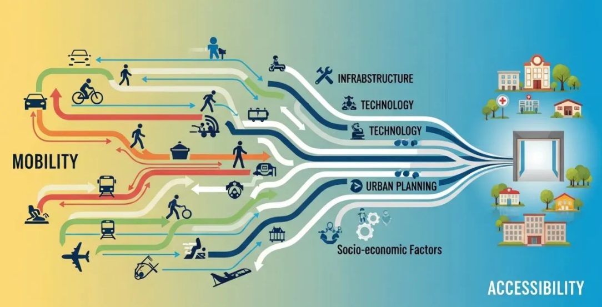
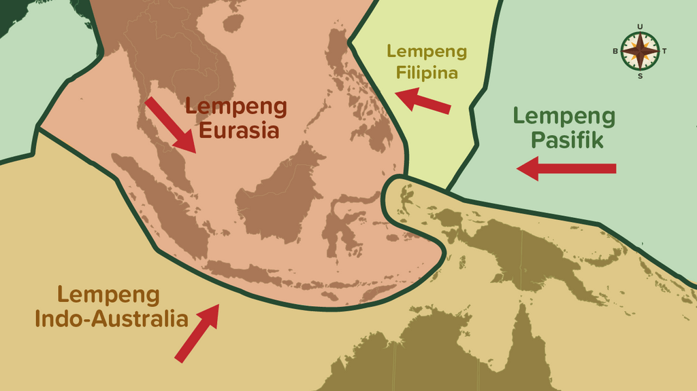
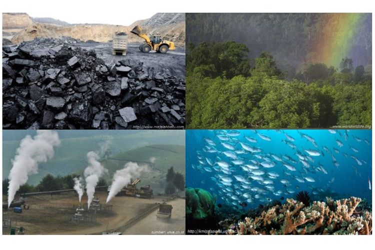
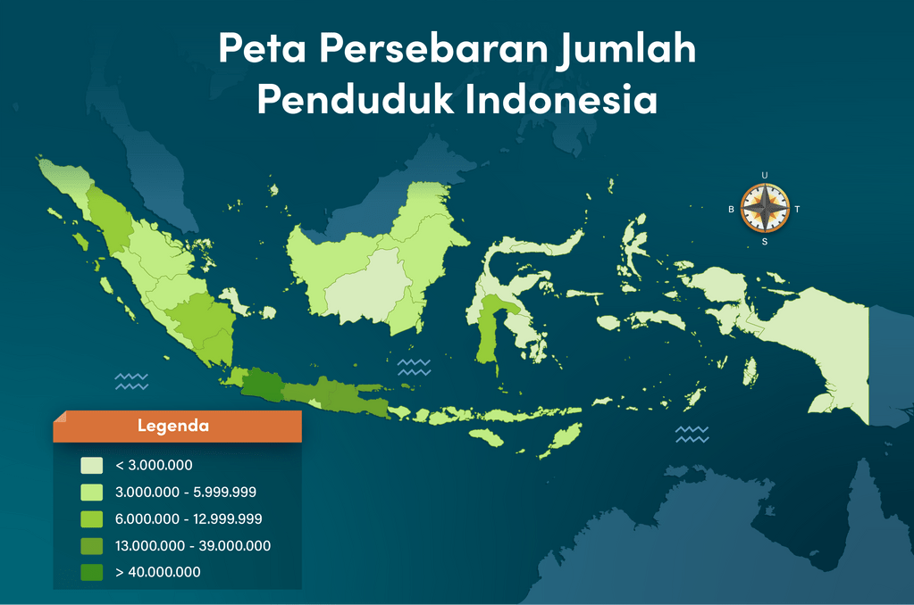

Bab 5: Keruangan dan Konektivitas Antarruang dan Antarwaktu
A. Konsep Dasar Ruang dan Konektivitas
a. Pengantar
Kehidupan manusia tidak bisa dipisahkan dari ruang tempat ia berada. Setiap aktivitas—bertani, berdagang, bekerja, belajar, atau berwisata—selalu berlangsung di ruang tertentu, dan ruang itu saling berhubungan dengan ruang lain. Bayangkan sebuah desa kecil yang dikelilingi sawah dan sungai. Setiap pagi, truk berisi hasil panen menuju pasar kota, sementara dari arah sebaliknya datang pupuk, bahan bakar, dan barang kebutuhan rumah tangga. Desa dan kota saling bergantung; hubungan timbal balik inilah yang disebut konektivitas antarruang.
b. Pengertian Ruang
Dalam ilmu sosial dan geografi, ruang adalah tempat di permukaan bumi yang menjadi wadah kehidupan manusia dan makhluk hidup. Ruang bisa bersifat fisik, seperti rumah, sekolah, sawah, gunung, sungai, atau jalan raya; dan bisa juga sosial, seperti jaringan kerja, pasar, atau sistem informasi yang menghubungkan orang dan kegiatan ekonomi. Setiap ruang memiliki fungsi dan peran berbeda, tetapi saling bergantung. Contohnya:
- Ruang pertanian di desa menghasilkan bahan pangan untuk dikonsumsi di kota.
- Ruang industri di kota memproduksi alat dan mesin untuk digunakan di desa.
- Ruang wisata di gunung atau pantai menjadi tempat rekreasi bagi masyarakat kota.
Hubungan semacam ini menunjukkan bahwa ruang tidak berdiri sendiri; semua ruang saling terkait dalam jaringan aktivitas manusia di bumi.

Letakkan file gambar dengan nama "gambar1.jpg" di folder "s1-bab-5"
c. Konektivitas Antarruang
Konektivitas berarti hubungan dan keterkaitan antarwilayah. Hubungan ini bisa terbentuk karena faktor alam, aktivitas manusia, atau kemajuan teknologi. Beberapa bentuk konektivitas yang umum dijumpai:
- Konektivitas fisik, seperti jalan, jembatan, sungai, pelabuhan, dan jalur udara. → Menghubungkan tempat tinggal, sekolah, pasar, dan pusat kegiatan ekonomi.
- Konektivitas ekonomi, berupa kegiatan distribusi dan perdagangan antarwilayah. → Contoh: hasil pertanian dari desa dijual ke kota, sementara barang industri dari kota masuk ke desa.
- Konektivitas sosial-budaya, muncul dari perpindahan manusia dan pertukaran budaya. → Contoh: perantau membawa bahasa, makanan, dan kebiasaan baru ke daerah tujuan.
- Konektivitas digital, tumbuh karena perkembangan internet dan teknologi komunikasi. → Contoh: jual beli online, pembelajaran jarak jauh, dan penyebaran informasi digital.
d. Mengapa Konektivitas Penting?
Konektivitas membuat kehidupan manusia menjadi dinamis dan berkembang. Wilayah yang memiliki konektivitas baik akan lebih mudah berkembang karena adanya pertukaran sumber daya, informasi, dan peluang ekonomi.
Manfaat konektivitas:
- Meningkatkan akses pendidikan, kesehatan, dan ekonomi.
- Mempercepat distribusi barang dan jasa antarwilayah.
- Membuka lapangan kerja baru dan memperluas interaksi sosial.
Namun, konektivitas juga menimbulkan tantangan baru:
- Pembangunan jalan dan industri bisa menyebabkan alih fungsi lahan.
- Urbanisasi dapat menimbulkan kepadatan dan kemacetan di kota.
- Pertumbuhan ekonomi tidak merata bisa memperbesar kesenjangan wilayah.
e. Contoh dalam Kehidupan Sehari-hari
- Jalan desa yang baru dibangun membuat hasil panen lebih cepat sampai ke pasar.
- Jaringan internet yang semakin kuat mempermudah murid mencari informasi belajar.
- Pembangunan jembatan menghubungkan dua wilayah yang sebelumnya terpisah sungai.
- Akses transportasi membuat masyarakat desa bisa bekerja di kota tanpa harus pindah tempat tinggal.
Setiap perubahan ruang ini menunjukkan bahwa kehidupan sosial dan ekonomi manusia selalu mengikuti arah perkembangan konektivitas.
Refleksi A
- Apa contoh konektivitas antara tempat tinggalmu dan wilayah lain di sekitarnya?
- Barang, informasi, atau kebiasaan apa yang paling sering berpindah dari daerahmu ke daerah lain?
- Apakah ada perubahan besar sejak dibangun jalan baru, jembatan, atau sinyal internet semakin kuat?
- Menurutmu, apakah semua bentuk konektivitas selalu membawa kebaikan? Mengapa?
B. Kondisi Geografis Indonesia
a. Ciri Umum Letak dan Kondisi Indonesia
Indonesia merupakan negara kepulauan terbesar di dunia dengan lebih dari 17.000 pulau yang terbentang di antara dua benua (Asia dan Australia) dan dua samudra (Hindia dan Pasifik). Letak yang strategis ini menyebabkan Indonesia menjadi titik pertemuan berbagai jalur perdagangan, budaya, dan iklim dunia. Letak geografis tersebut membawa dampak positif dan tantangan besar:
- Positif: kaya akan keanekaragaman hayati, budaya, serta sumber daya alam.
- Tantangan: rawan bencana alam, seperti gempa bumi, letusan gunung berapi, dan tsunami karena berada di ring of fire (cincin api Pasifik).
Selain itu, kondisi tropis dengan dua musim utama — hujan dan kemarau — memungkinkan pertanian tumbuh subur hampir sepanjang tahun, namun juga menuntut adaptasi terhadap perubahan cuaca ekstrem akibat perubahan iklim global.

Letakkan file gambar dengan nama "gambar2.jpg" di folder "s1-bab-5"
b. Struktur Fisik dan Lapisan Bumi Indonesia
Secara geologis, wilayah Indonesia berada di pertemuan tiga lempeng besar: Eurasia, Indo-Australia, dan Pasifik. Akibatnya, terbentuklah banyak gunung api, lembah, serta patahan bumi yang membuat tanah Indonesia subur tetapi juga rawan gempa.

Letakkan file gambar dengan nama "gambar3.jpg" di folder "s1-bab-5"
Lapisan bumi yang berpengaruh terhadap kehidupan di Indonesia meliputi:
- Litosfer – lapisan batuan penyusun kerak bumi. Menjadi dasar terbentuknya pegunungan, dataran, dan pulau.
- Hidrosfer – lapisan air, meliputi laut, sungai, danau, dan air tanah. Penting untuk pertanian, perikanan, dan transportasi.
- Atmosfer – lapisan udara yang memengaruhi iklim dan cuaca, juga menjadi tempat terjadinya sirkulasi udara dan hujan.
Ketiga lapisan ini saling berinteraksi dan menentukan karakter wilayah di Indonesia, seperti dataran tinggi pertanian, kawasan pesisir, dan hutan tropis.
c. Persebaran Wilayah dan Aktivitas Sosial Ekonomi
Karena kondisi geografisnya yang sangat beragam, setiap wilayah di Indonesia memiliki karakteristik sosial dan ekonomi yang berbeda.
| Wilayah | Ciri Utama | Aktivitas Ekonomi Dominan |
|---|---|---|
| Pesisir | Banyak pelabuhan, masyarakat bergantung pada laut | Perikanan, perdagangan, transportasi laut |
| Dataran Rendah | Tanah subur, dekat sungai dan kota | Pertanian, industri kecil, jasa |
| Dataran Tinggi | Suhu sejuk, cocok untuk tanaman sayur dan teh | Pertanian hortikultura, wisata alam |
| Kepulauan Terpencil | Akses terbatas, sumber daya melimpah | Perikanan tradisional, kerajinan lokal |
| Perkotaan | Penduduk padat, pusat kegiatan ekonomi dan teknologi | Industri, perdagangan, layanan digital |
Konektivitas antarwilayah menjadi sangat penting untuk memastikan hasil dan potensi daerah dapat saling mendukung. Misalnya:
- Hasil laut dari pesisir dikirim ke kota untuk dipasarkan.
- Produk industri dari kota dikirim ke desa untuk menunjang pertanian.
- Wilayah pegunungan menjadi sumber air dan oksigen bagi daerah di bawahnya.
d. Pengaruh Letak dan Kondisi terhadap Kehidupan
Letak geografis Indonesia juga memengaruhi pola hidup dan budaya masyarakatnya. Beberapa contohnya:
- Masyarakat pantai terbiasa hidup terbuka dan dinamis karena sering berinteraksi dengan pendatang.
- Masyarakat pegunungan cenderung menjaga tradisi dan memiliki pola pertanian yang teratur.
- Daerah perkotaan menjadi tempat pertemuan berbagai budaya akibat migrasi dan urbanisasi.
Selain itu, perbedaan kondisi alam juga menciptakan keragaman mata pencaharian. Di satu sisi, hal ini memperkaya identitas nasional. Namun di sisi lain, juga bisa menimbulkan ketimpangan antarwilayah bila tidak ada konektivitas dan pemerataan pembangunan.
Refleksi B
- Apa keunggulan wilayah tempat tinggalmu dibanding wilayah lain di Indonesia?
- Apakah kamu bisa menemukan hubungan antara kondisi geografis dan kegiatan ekonomi di sekitarmu?
- Menurutmu, apa tantangan terbesar Indonesia akibat letaknya yang strategis namun rawan bencana?
- Bagaimana teknologi dapat membantu mengatasi keterbatasan ruang atau jarak antardaerah?
C. Potensi Sumber Daya Alam dan Pengelolaannya
a. Ragam Sumber Daya Alam di Indonesia
Indonesia dikenal sebagai negara yang sangat kaya sumber daya alam (SDA). Hal ini dipengaruhi oleh kondisi geografis, geologis, dan iklim tropis yang mendukung keberagaman hayati serta hasil bumi. Secara umum, sumber daya alam dibedakan menjadi dua jenis utama:
- Sumber Daya Alam Hayati (biotik) - Berasal dari makhluk hidup — seperti tumbuhan, hewan, dan hasil hutan. Contoh: padi, kelapa, ikan laut, rotan, kayu, serta hasil peternakan.
- Sumber Daya Alam Nonhayati (abiotik) - Berasal dari benda mati — seperti air, tanah, udara, dan bahan tambang. Contoh: minyak bumi, gas alam, batu bara, nikel, emas, serta panas bumi.

Letakkan file gambar dengan nama "gambar4.jpg" di folder "s1-bab-5"
Kekayaan ini menjadikan Indonesia berperan penting di tingkat regional dan global dalam penyediaan bahan baku energi, pangan, dan industri.
b. Persebaran Sumber Daya Alam
Setiap daerah di Indonesia memiliki keunggulan SDA yang berbeda-beda tergantung kondisi alamnya:
| Wilayah | Jenis SDA Utama | Contoh Daerah Penghasil |
|---|---|---|
| Sumatra | Minyak bumi, gas alam, perkebunan sawit, karet | Riau, Aceh, Sumatera Selatan |
| Jawa | Pertanian, industri, perikanan laut | Jawa Barat, Jawa Timur |
| Kalimantan | Hutan tropis, batu bara, emas | Kalimantan Timur, Tengah |
| Sulawesi | Nikel, kelapa, perikanan | Sulawesi Tengah, Tenggara |
| Papua | Emas, tembaga, hutan hujan tropis | Papua Tengah, Papua Barat |
| Nusa Tenggara | Peternakan, garam, pariwisata alam | NTB, NTT |
Persebaran ini menunjukkan betapa pentingnya konektivitas antarruang, karena hasil SDA di satu wilayah sering kali dibutuhkan oleh wilayah lain. Contoh: Batu bara dari Kalimantan digunakan untuk energi di Pulau Jawa, sedangkan hasil industri dari Jawa dikirim ke Papua dan Sulawesi.
c. Pengelolaan Sumber Daya Alam: Antara Manfaat dan Tantangan
Kekayaan alam yang besar tidak selalu berarti kemakmuran, karena cara pengelolaan yang tidak bijak dapat merusak lingkungan. Beberapa masalah utama dalam pengelolaan SDA di Indonesia adalah:
- Eksploitasi berlebihan, seperti penebangan hutan liar dan tambang ilegal.
- Pencemaran air dan udara, akibat limbah industri atau pertanian.
- Ketimpangan ekonomi, karena hasil SDA tidak selalu dinikmati masyarakat lokal.
- Kerusakan ekosistem, seperti banjir dan tanah longsor akibat hilangnya vegetasi.
Sebagai tanggapan, muncul konsep pembangunan berkelanjutan (sustainable development) yang menekankan tiga prinsip:
- Ekonomi – SDA digunakan untuk meningkatkan kesejahteraan.
- Sosial – hasilnya harus adil dan bermanfaat bagi masyarakat.
- Lingkungan – menjaga keseimbangan alam agar sumber daya tidak habis.
d. Pemanfaatan Teknologi dalam Pengelolaan SDA
Perkembangan teknologi memberi peluang besar untuk pengelolaan SDA yang lebih efisien dan ramah lingkungan. Beberapa contoh penerapannya:
- Pertanian presisi menggunakan sensor kelembapan dan drone untuk mengatur irigasi.
- Energi terbarukan seperti tenaga surya, angin, dan panas bumi mulai dikembangkan.
- Sistem informasi geografis (SIG) untuk memetakan potensi SDA dan mengontrol dampak lingkungan.
- Rekayasa bahan dan bioteknologi untuk meningkatkan hasil tanpa merusak alam.
Dengan pendekatan ilmiah dan kolaborasi antarbidang — teknologi, sains, ekonomi, dan sosial — pengelolaan SDA bisa menjadi sumber kemajuan, bukan kerusakan.
Refleksi C
- Apa jenis sumber daya alam yang paling melimpah di daerahmu?
- Bagaimana cara masyarakat di sekitarmu mengelolanya — apakah sudah berkelanjutan?
- Coba hubungkan antara kegiatan ekonomi (seperti pertanian, tambang, atau industri) dengan dampak lingkungannya.
- Menurutmu, bagaimana peran teknologi dan keahlian di jurusanmu dalam mengatasi masalah pengelolaan SDA?
D. Dinamika Ruang, Kependudukan, dan Aktivitas Sosial–Ekonomi
a. Konsep Dinamika Ruang
Ruang tidak hanya sekadar wilayah di peta, tetapi tempat berlangsungnya berbagai aktivitas manusia dan interaksi dengan lingkungan. Dalam konteks geografi, ruang bersifat dinamis, artinya terus berubah karena adanya aktivitas sosial, ekonomi, politik, dan alam.
Perubahan tata ruang dapat terjadi karena:
- Pertumbuhan penduduk.
- Perkembangan teknologi dan transportasi.
- Perubahan fungsi lahan (misalnya dari pertanian menjadi industri atau perumahan).
- Kebijakan pemerintah dan pengaruh globalisasi.
Dinamika ruang inilah yang menyebabkan perbedaan antara wilayah pedesaan, perkotaan, dan daerah peralihan (urban fringe).

Letakkan file gambar dengan nama "gambar5.jpg" di folder "s1-bab-5"
b. Kependudukan dan Sebaran Penduduk
Penduduk adalah faktor utama yang menggerakkan dinamika ruang. Jumlah, persebaran, dan kualitas penduduk akan memengaruhi bentuk pemanfaatan ruang dan sumber daya.
1. Pertumbuhan Penduduk
Terjadi karena selisih antara kelahiran, kematian, dan migrasi. Indonesia termasuk negara dengan jumlah penduduk besar dan pertumbuhan yang masih cukup tinggi.
2. Sebaran Penduduk yang Tidak Merata
Sebagian besar penduduk terkonsentrasi di Pulau Jawa dan Bali, sementara wilayah timur seperti Kalimantan, Sulawesi, dan Papua relatif jarang penduduknya. Ketimpangan ini menyebabkan perbedaan dalam pembangunan ekonomi dan pelayanan publik.
3. Dampak Sosial dan Ekonomi
- Kepadatan tinggi → tekanan terhadap lahan dan infrastruktur.
- Kepadatan rendah → keterbatasan akses pendidikan dan kesehatan.
- Mobilitas penduduk (urbanisasi, transmigrasi) menjadi faktor penting dalam pemerataan pembangunan.
c. Aktivitas Ekonomi dan Pola Pemanfaatan Ruang
Aktivitas ekonomi manusia sangat dipengaruhi oleh kondisi geografis dan sumber daya alam di wilayahnya. Pola umum yang dapat diamati di Indonesia adalah:
| Jenis Wilayah | Aktivitas Ekonomi Dominan | Contoh |
|---|---|---|
| Dataran rendah | Pertanian, industri, perdagangan | Jawa Tengah, Sumatera Timur |
| Pesisir | Perikanan, pelabuhan, pariwisata | Bali, Sulawesi Utara |
| Pegunungan | Perkebunan, kehutanan, energi | Sumatera Barat, Malang |
| Perkotaan | Industri, jasa, teknologi | Jakarta, Surabaya |
| Pedesaan | Pertanian, peternakan, kerajinan | Lombok, Kulon Progo |
Perkembangan ekonomi menciptakan konektivitas antarruang, karena setiap wilayah saling membutuhkan:
- Daerah pertanian menyediakan bahan pangan.
- Daerah industri mengolah bahan mentah menjadi produk jadi.
- Daerah kota menjadi pusat distribusi dan jasa.
Semakin baik konektivitas transportasi dan komunikasi, semakin efisien pula aliran barang, jasa, dan informasi.
d. Tantangan Dinamika Ruang di Era Modern
Pertumbuhan wilayah dan aktivitas ekonomi juga membawa tantangan besar terhadap tata ruang dan lingkungan:
1. Urbanisasi dan Ketimpangan Wilayah
Kota-kota besar seperti Jakarta, Surabaya, dan Medan tumbuh sangat cepat sehingga menghadapi kemacetan, kepadatan, dan polusi. Sebaliknya, banyak daerah perdesaan mengalami penurunan jumlah penduduk karena migrasi ke kota.
2. Alih Fungsi Lahan
Lahan pertanian berubah menjadi perumahan atau kawasan industri, menyebabkan berkurangnya produksi pangan lokal.
3. Kesenjangan Infrastruktur
Konektivitas di Indonesia belum merata — daerah timur masih memiliki keterbatasan akses transportasi, listrik, dan internet.
4. Dampak Lingkungan dan Sosial
Pertumbuhan ekonomi yang cepat dapat menyebabkan kerusakan lingkungan, meningkatnya emisi karbon, dan perubahan sosial budaya di masyarakat.
e. Upaya Pengelolaan Tata Ruang dan Pemerataan Pembangunan
Untuk menghadapi tantangan dinamika ruang, pemerintah dan masyarakat perlu bekerja sama dalam:
- Perencanaan tata ruang nasional dan daerah (RTRW).
- Penguatan konektivitas transportasi: jalan tol, pelabuhan, bandara, dan digitalisasi wilayah terpencil.
- Pembangunan berkelanjutan: menjaga keseimbangan antara ekonomi, sosial, dan lingkungan.
- Pemanfaatan teknologi digital dan data spasial (SIG, citra satelit) untuk pemantauan perubahan ruang secara real-time.
Refleksi D
- Bagaimana perkembangan wilayah tempat tinggalmu dalam 10 tahun terakhir? Apakah ada perubahan fungsi lahan atau kepadatan penduduk?
- Apa hubungan antara konektivitas transportasi dan pemerataan ekonomi?
- Bagaimana jurusanmu dapat berkontribusi dalam mengembangkan wilayah yang berkelanjutan dan terkoneksi dengan baik?
- Apa dampak yang bisa timbul jika tata ruang tidak direncanakan dengan bijak?
E. Mitigasi dan Adaptasi Bencana dalam Konteks Keruangan
a. Pengantar: Indonesia sebagai Negara Rawan Bencana
Indonesia dikenal sebagai salah satu negara dengan risiko bencana alam tertinggi di dunia. Letaknya di pertemuan tiga lempeng besar — Eurasia, Indo-Australia, dan Pasifik — menjadikan wilayah ini rawan gempa bumi, letusan gunung api, dan tsunami. Selain itu, kondisi geografis dan iklim tropis juga menimbulkan bencana hidrometeorologi, seperti banjir, tanah longsor, kekeringan, dan angin puting beliung.

Letakkan file gambar dengan nama "gambar6.jpg" di folder "s1-bab-5"
Dengan memahami keruangan bencana, kita dapat mengenali pola dan risiko di berbagai daerah — ini menjadi dasar bagi upaya mitigasi dan adaptasi yang tepat.
b. Jenis-Jenis Bencana Berdasarkan Faktor Penyebabnya
1. Bencana Geologis
- Gempa bumi: pergerakan lempeng tektonik yang menyebabkan getaran tanah.
- Tsunami: gelombang besar akibat gempa di dasar laut.
- Letusan gunung api: keluarnya magma dan gas dari perut bumi.
Contoh: Gunung Merapi (Yogyakarta), Gunung Sinabung (Sumatera Utara).
2. Bencana Hidrometeorologis
- Banjir: curah hujan tinggi, drainase buruk, atau penebangan hutan.
- Tanah longsor: lereng curam dan vegetasi yang rusak.
- Kekeringan: perubahan pola curah hujan dan degradasi lahan.
Contoh: Banjir di Jakarta, longsor di Jawa Barat, kekeringan di NTT.
3. Bencana Non-Alam dan Sosial
- Kebakaran hutan, pencemaran lingkungan, pandemi, dan konflik sosial.
Contoh: Kebakaran lahan gambut di Kalimantan dan Sumatera, pandemi COVID-19.

Letakkan file gambar dengan nama "gambar7.jpg" di folder "s1-bab-5"
c. Konsep Mitigasi dan Adaptasi
Mitigasi dan adaptasi adalah dua pendekatan utama dalam mengurangi risiko bencana:
| Konsep | Pengertian | Contoh Tindakan |
|---|---|---|
| Mitigasi | Upaya mengurangi dampak bencana sebelum terjadi. | - Membangun rumah tahan gempa - Menanam pohon di lereng gunung - Pemetaan daerah rawan bencana |
| Adaptasi | Upaya menyesuaikan diri terhadap dampak bencana yang tidak bisa dihindari. | - Membuat sistem peringatan dini - Mengubah pola tanam sesuai musim - Relokasi penduduk dari daerah rawan |
d. Hubungan Keruangan, Penduduk, dan Risiko Bencana
Setiap daerah di Indonesia memiliki karakteristik keruangan yang memengaruhi tingkat risiko bencana:
| Wilayah | Risiko Bencana Dominan | Faktor Keruangan | Dampak Utama |
|---|---|---|---|
| Pesisir Selatan Jawa | Tsunami, banjir rob | Dekat lempeng samudra, dataran rendah | Kerusakan pemukiman, kehilangan lahan |
| Pegunungan Sumatera | Longsor, letusan gunung api | Lereng curam, curah hujan tinggi | Kerusakan infrastruktur |
| Kalimantan Tengah | Kebakaran hutan | Lahan gambut kering, aktivitas manusia | Polusi udara, kehilangan biodiversitas |
| NTT & NTB | Kekeringan | Curah hujan rendah, tanah berpasir | Krisis air, gagal panen |
Kepadatan penduduk dan aktivitas ekonomi juga memperbesar dampak jika tidak diimbangi dengan tata ruang dan kebijakan mitigasi yang baik.
e. Upaya Mitigasi dan Adaptasi Berbasis Masyarakat
1. Edukasi dan Simulasi Bencana di Sekolah
Murid dilatih untuk memahami tanda-tanda bencana dan prosedur evakuasi.
2. Pemetaan Partisipatif oleh Warga
Masyarakat menandai daerah rawan banjir, longsor, atau kebakaran pada peta lingkungan sekitar.
3. Pemanfaatan Teknologi Digital
Aplikasi seperti BMKG Info, InaRisk, atau Google Earth digunakan untuk memantau potensi risiko.
4. Kearifan Lokal dalam Menghadapi Bencana
Masyarakat adat di Indonesia sering memiliki strategi tradisional dalam menghadapi bencana, seperti sistem rumah panggung di daerah banjir, atau larangan menebang hutan sembarangan di lereng gunung.
Refleksi E
- Mengapa mitigasi dan adaptasi perlu dilakukan sebelum bencana terjadi?
- Bagaimana perkembangan teknologi membantu masyarakat memahami risiko bencana di masa kini?
- Apakah kebijakan tata ruang di daerahmu sudah mempertimbangkan risiko bencana?
- Bagaimana bidang keahlianmu (ATPH, TSM, AKL, TKJ) dapat berkontribusi dalam sistem mitigasi dan adaptasi bencana?
f. Penutup: Menuju Masyarakat Tangguh Bencana
Pemahaman terhadap keruangan dan konektivitas antarwaktu membantu kita melihat bahwa bencana tidak hanya peristiwa alam, tetapi juga hasil interaksi antara manusia dan lingkungannya. Dengan berpikir ilmiah, menggunakan teknologi, dan menerapkan kearifan lokal, masyarakat Indonesia dapat menjadi lebih tangguh, adaptif, dan berdaya dalam menghadapi tantangan lingkungan.
h. Keterkaitan dengan Bidang Keahlian di SMK
Aspek Keruangan dan Konektivitas Antarruang dan Antarwaktu tidak hanya membahas geografi dan lingkungan, tetapi juga menyentuh keterampilan teknis lintas jurusan di SMK. Setiap bidang keahlian memiliki kontribusi penting dalam memahami, memantau, dan menanggulangi risiko bencana serta perubahan lingkungan.
1. Jurusan ATPH (Agribisnis Tanaman Pangan dan Hortikultura)
Konteks: Petani modern harus mampu membaca kondisi ruang dan waktu agar pertanian tetap produktif dan aman dari risiko iklim.
Relevansi:
- Menganalisis peta agroklimat untuk menentukan waktu tanam dan pola rotasi tanaman.
- Menyesuaikan teknik irigasi berdasarkan kondisi topografi dan curah hujan.
- Menerapkan adaptasi pertanian berkelanjutan, misalnya menanam tanaman penahan erosi di lereng curam.
Keterampilan IPAS:
- Menggunakan data cuaca dan peta tanah untuk prediksi hasil panen.
- Mengamati hubungan antara perubahan musim dan pertumbuhan tanaman.
2. Jurusan TSM (Teknik dan Bisnis Sepeda Motor)
Konteks: Mekanik dan teknisi juga perlu memahami kondisi lingkungan dan ruang kerja yang dipengaruhi oleh iklim dan cuaca.
Relevansi:
- Menentukan bahan pelindung kendaraan yang tahan terhadap cuaca ekstrem (panas, lembab, korosif).
- Mengatur ventilasi dan sistem kerja bengkel agar tetap aman dan efisien di lingkungan tropis.
- Berperan dalam proyek sosial mitigasi, misalnya pembuatan alat deteksi banjir sederhana dari sensor air.
Keterampilan IPAS:
- Menghubungkan perubahan suhu dengan efisiensi bahan bakar atau umur pelumas.
- Mendesain perawatan kendaraan ramah lingkungan.
3. Jurusan AKL (Akuntansi dan Keuangan Lembaga)
Konteks: Dalam konteks bencana, kemampuan manajemen dan pencatatan menjadi penting untuk transparansi dan efisiensi sumber daya.
Relevansi:
- Membuat laporan biaya mitigasi dan bantuan secara akurat dan terstruktur.
- Menghitung efisiensi penggunaan dana proyek lingkungan.
- Membantu sekolah atau komunitas dalam pencatatan donasi dan logistik saat terjadi bencana.
Keterampilan IPAS:
- Menghubungkan data keruangan (misal lokasi terdampak bencana) dengan laporan keuangan.
- Membuat tabel dan grafik distribusi bantuan berdasarkan wilayah terdampak.
4. Jurusan TKJ (Teknik Komputer dan Jaringan)
Konteks: Teknologi informasi dan komunikasi berperan vital dalam sistem peringatan dini dan pengelolaan data bencana.
Relevansi:
- Mendesain sistem informasi geografis sederhana (SIG) untuk memantau risiko bencana di lingkungan sekitar sekolah.
- Membuat peta digital lokasi aman dan jalur evakuasi menggunakan aplikasi berbasis ponsel.
- Mengembangkan aplikasi sederhana untuk pelaporan kondisi lapangan saat bencana.
Keterampilan IPAS:
- Mengolah data keruangan (longitude, latitude, elevasi) dalam bentuk visual digital.
- Mengintegrasikan data cuaca real-time dengan sistem jaringan sekolah.
i. Refleksi Integratif
Untuk memperdalam pemahaman antarjurusan, murid dapat mendiskusikan pertanyaan berikut:
Refleksi Lintas Jurusan
- Bagaimana lokasi geografis sekolahmu memengaruhi risiko bencana di wilayah sekitar?
- Apa kontribusi jurusanmu dalam mencegah atau menanggulangi dampak lingkungan di masa depan?
- Jika seluruh jurusan bekerja sama, seperti apa solusi lintas keahlian yang bisa dilakukan untuk menciptakan lingkungan sekolah tangguh bencana?